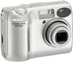
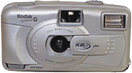

Photography was not the path I'd intended to take, but looking back, I can see the natural progression to this profession. I have come from an Engineering background, loved art in high school, graduated from college with commerce degree, did my masters degree in computers, and presently working as a Software Engineer.
I am intrigued with finding the uniqueness of every object I photograph and try to reveal originality in every snap I take. My style reflects my personality - different, artistic, and thoughtful. I strive to present each photo as its own work of art. I do post-processing on my own, thus deriving special pleasure in utilizing my Software Engineering skills.
I don't stock much of an equipment, but still would be my pleasure to take you through all my photographic equipments I have ever used (reverse chronology).
Sony SLT-A65V
2012
My first SLR camera with translucent mirror technology.
Sony DSC-H20
2009
I realized, I should have some extra zoom in a point and shoot camera. I went for it eventhough I always realized the need for a SLR.
Nikon E4600

2005
My first digital camera.
Kodak KB 12 Plus

2001
Gifted by my Father and the first camera with film loading.